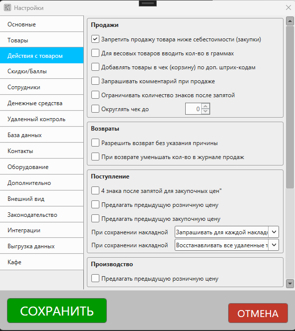

Описание раздела настроек "Действия с товаром". Открыть настройки можно из главного окна программы Файл – Настройки.

Продажи
Запретить продажу товара ниже себестоимости (закупки)
Данная опция позволяет ограничить продажу товаров по цене ниже, чем их закупочная цена. В момент оформления продажи программа будет проверять итоговую стоимость товара (с учетом скидки) и сравнивать с последней закупочной ценой.
Если розничная цена (с учетом скидки) будет ниже, чем закупочная цена товаров, то программа запретит завершить такую продажу.
Для весовых товаров вводить кол-во в граммах
При включении данной опции программа позволит вводить кол-во для весовых товаров в значение 1/1000. Т.е. ввод значение количества 125 будет преобразовано в 0,125 в чеке. Данная опция работает только для товаров, в карточке категории которых указан тип Весовые товары.
Это может быть полезно в случаях, когда весы не подключены напрямую к программе.
Добавлять товары в чек (корзину) по доп. штрихкодам
При включении данной опции программа в момент продажи будет искать товары по значению дополнительных штрихкодов, указанных в карточке товаров, и добавлять их в чек (корзину).
Запрашивать комментарий к продаже
Если данная опция включена, то при сохранении продажи программа будет запрашивать дополнительный комментарий, который можно будет увидеть в карточке продажи.
Ограничивать количество знаков после запятой
Если опция включена, то при добавлении товаров в чек программа будет проверять значение опции Знаков после запятой в карточке категории, к которой принадлежит товар.
Например, если вы включите опцию Ограничивать количество знаков после запятой, а в карточке категории для опции Знаков после запятой укажите значение 0, то в момент продажи не сможете ввести дробные значения.
Округлять чек до...
Данная опция позволяет округлять итоговую сумму чека до числа, кратного указанному коэффициенту. Округление на чек происходит в меньшую сторону (в пользу покупателя) установкой скидки на чек.
Подробная статья
Возвраты
Разрешить возврат без указания причины
При включении данной опции программа позволит производить возврат товаров от покупателя без указания причины.
Если опция выключена – программа запросит причину возврата.
При возврате уменьшать кол-во в журнале продаж
Опция отвечает за отображения количества проданного товара в журнале продаж:
- Если опция включена, то в журнале продаж кол-во товаров будет уменьшено на то, которое было возвращено. Например, если продано 3 ед. товара, а одну вернули, то при включенной опции в журнале продаж будет указано 2 ед. товара.
- Если опция выключена, то кол-во будет показано без учета возвратов.
Так же эта опция влияет на отображение расчет выручки и прибыли в журнале продаж:
- если опция включена, то выручка и прибыль в журнале продаж будут уменьшены на розничную и закупочную цену возвращенного товара
- если опция выключена, то выручка и прибыль будут рассчитаны так, будто возврата не было
Важно
Расчет выручки и прибыли в сводном отчете не зависит от состояния этой опции.
Поступление
4 знака после запятой для закупочных цен
По умолчанию для ввода закупочных цен в карточке накладной доступен ввод 2 знаков после запятой. В ряде случаев может возникнуть необходимость увеличения точности, например, когда поставщик продает товары не по 1 штуке, а сразу упаковкой. Тогда закупочная цена единицы товара может иметь дробное значение с более чем 2 знаками после запятой.
Пример
цена упаковки с товарами: 127.00 рублей
кол-во товаров в упаковке: 16 шт
закупочная цена 1 единицы: 7.9375 рублей
В этом примере будет полезно включить указанную опцию, чтобы избежать расхождения по итоговой сумме накладной.
Предлагать предыдущую розничную цену
Если опция включена, то при добавлении товара в документ накладной на поступление товару будет присвоена розничная цена, указанная при предыдущем поступлении.
Если опция выключена, цена будет равна нулю.
Если используется автоматическое ценообразование, то розничная цена будет установлена согласно правилам ценообразования.
Предлагать предыдущую закупочную цену
Если опция включена, то при добавлении товара в накладную на поступление программа будет устанавливать закупочную цену равной той, которая была указана при предыдущем поступлении этого товара.
Если опция отключена, значение закупочной цены будет установлена равным нулю.
При сохранении накладной...
Выберите один из вариант управления переоценкой товаров в момент сохранения карточки накладной.
Под переоценкой подразумевается установка розничной цены товара равной розничной цене, указанной в накладной для всех остатков такого товара. Переоценка происходит только при первом сохранении накладной. Если происходит редактирование документа, то переоценка товаров не будет происходить. Если накладная сохраняется со статусом Еще в пути, то переоценка не будет происходить.
В любом случае те остатки товаров, которые поступили именно в рамках этого документа, будут переоценены.
- Не переоценивать товары - Если выбран этот пункт, то цены на остатки товаров, которые уже были в наличии на момент поступления, не будут изменены.
- Переоценивать имеющиеся остатки товаров по ценам из накладной - Для остатков товаров, которые есть в сохраняемой накладной, будут установлена розничная цена, равная указанной в документе накладной
- Запрашивать для каждой накладной - При сохранении накладной программа будет запрашивать - производить переоценку товаров, которые поступили в рамках документа, или нет.
При сохранении накладной...
Выберите один из вариантов для восстановления удаленных товаров в момент сохранения карточки накладной.
Восстановление товаров происходит при сохранении уже существующей накладной. Например, если вы удалили какой-то товар, а потом внесли изменения в накладной, в которой этот товар был, то восстановление таких товаров будет происходить согласно этой опции.
Под восстановлением товара понимается снятие отметки "удален" - он снова появится в каталоге и будет доступен для выполнения различных действий (продажа, поступление и т.п.)
- Восстанавливать все удаленные товары - При сохранении накладной все товары, которые были ранее удалены и есть в сохраняемом документе, будут восстановлены.
- Восстанавливать только ненулевые удаленные товары - При сохранении накладной будут восстановлены только те товары, у которых есть ненулевые остатки
- Не восстанавливать удаленные товары - При сохранении накладной никакие удаленные товары не будут восстановлены
Производство
Предлагать предыдущую розничную цену
Если опция включена, то при добавлении товаров с типом "Рецепт производства" в документ "Производство" программа будет предлагать предыдущую розничную цену для товара. При необходимости вы сможете изменить цену вручную.
Действия в минус
Разрешить продажу отсутствующих товаров
Если необходимо разрешить продажу "в минус", т.е. продавать товары, независимо от их количества в каталоге, включите эту опцию.
Если нужно ограничить продажу товаров "в минус", выключите опцию. При выключенной опции программа в момент продажи будет проверять количество товара на остатке и не позволит завершить продажу, если продаваемое количество превышает фактический остаток товаров.
Показывать в результатах поиска товары, остатки которых 0 или меньше
Если опция включена, то при продаже и списании товарах будут отображаться те товары, остатки которых 0 или меньше.
Включение или выключение опции не влияет на возможность продажи в минус!
Для товаров, с которыми выполняется действие "в минус" считать прибыль по последней закупочной цене
Если опция включена, то списание товаров будет происходить из остатка, который был создан при последнем поступлении, даже если остаток равен нулю или отрицателен.
Таким образом, продажи в минус будут посчитаны по последней закупочной цене.
Если опция отключена, то закупочная цена при действиях "в минус" будет считаться нулевой.
Поиск товаров
Очищать строку поиска после добавления товара, когда включена опция "не закрывать окно после добавления"
Если опция включена, то в форме поиска товаров будет очищаться поле поиска, когда включена опция "не закрывать окно после добавления".
Это, например, может быть удобно при быстром сканировании штрихкодов без необходимости ручной очистки поля поиска.
Инвентаризация
Сохранять закупочную цену для излишков количества
При завершении инвентаризации, в которой есть товары с излишком (т.е. когда количество по факту больше, чем количество по базе), программа создает новый остаток, количество которого равно излишку.
- Если опция выключена, то закупочная цена для такого остатка будет равна нулю.
- Если опция включена, то для излишков будет установлена последняя закупочная цена такого товара.
Использование этой опции может быть полезно для более точного расчета прибыли торговой точки и частой пересортицы.
Заказы/резервы
Объединять позиции при добавлении в документ
Если опция включена, то при добавлении товаров в документ типа "Заказ/резерв" одинаковые товары будут объединяться, а их количество суммироваться.
Пример
Например, если в документе есть позиция "Кабель телевизионный" в количестве 10, и в заказ добавляется позиция "Кабель телевизионный" в количестве 5, то в документе эти позиции будут объединены в одну: "Кабель телевизионный" в количестве 15.
Если опция выключена, то объединения позиций происходить не будет - каждый добавленный товар будет отображаться отдельной строкой. При необходимости можно изменить количество уже существующей записи.